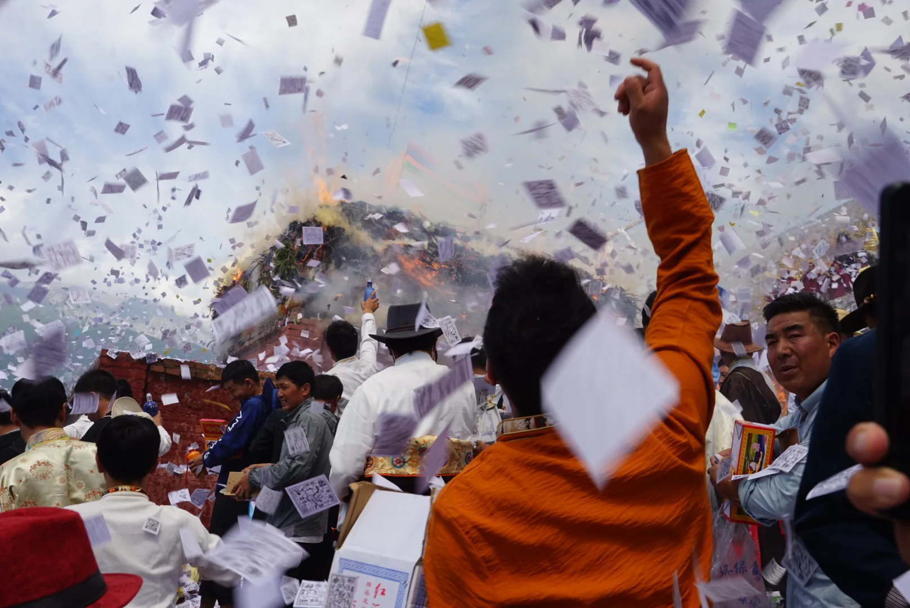
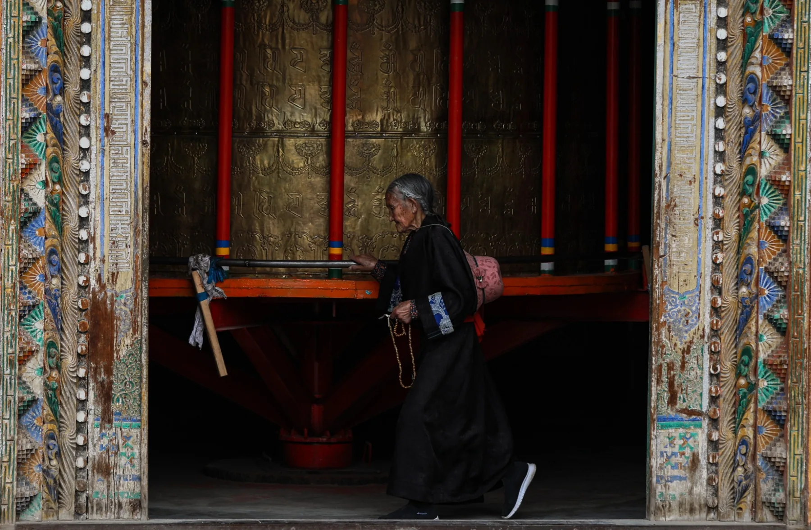
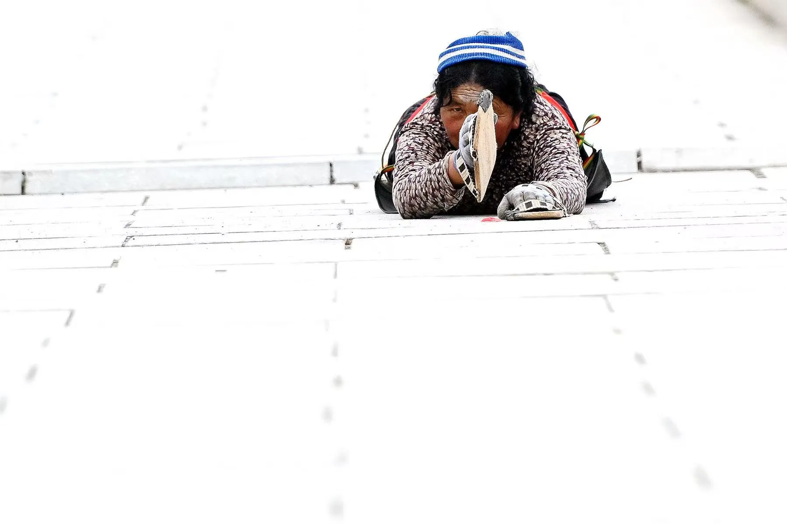
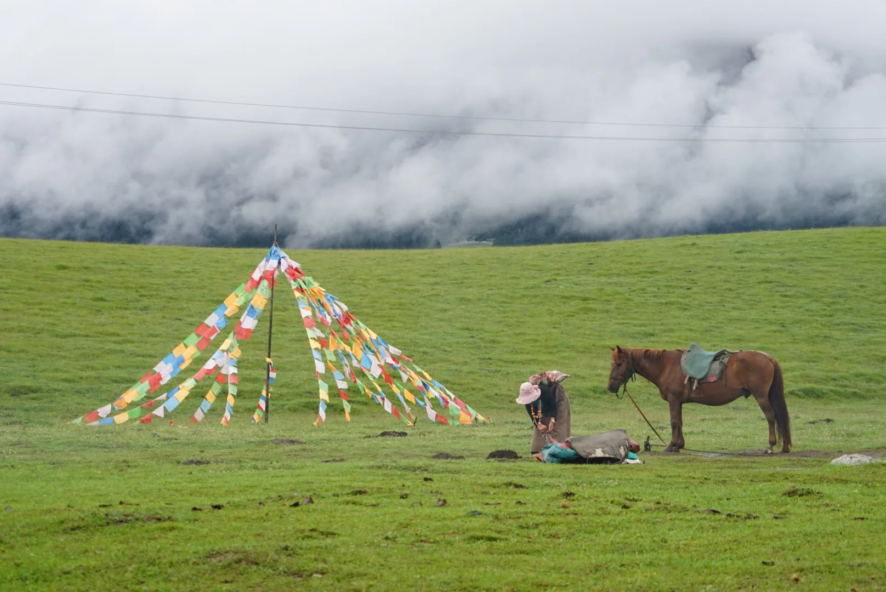
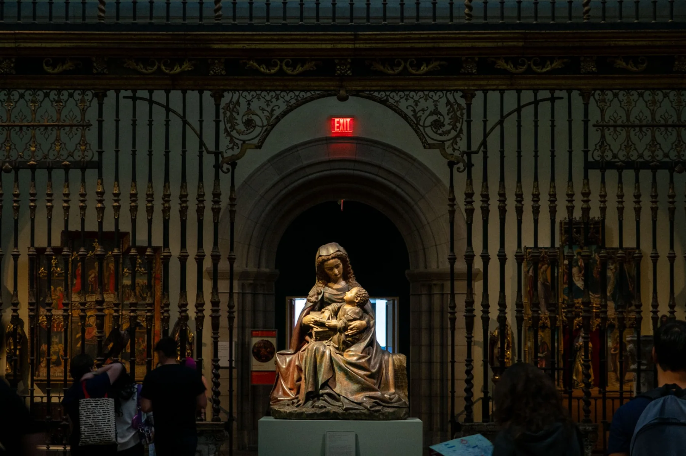

04 — PHOTOGRAPHY
Ritual, place
& visual culture.
Selected photographs of cultural gatherings, religious settings, and encounters with sacred art.
SELECTED WORK / TIBET
Gathering and
devotion.
These images attend to gesture, movement, and the relationship between people and place. Captions identify scenes without assigning meanings to the people pictured.

Ceremony in Motion
Local Arrow-Insertion Festival · Tibet

Passage
Tibet

Devotion
Tibet

Between Weather and Land
Tibet
SACRED ART / NEW YORK CITY
Looking at
the sacred.
Photography also traces how religious art is encountered and framed in museum spaces.

Framed Devotion
New York City
All photographs © Xi Zhang. Select a photograph to view it at a larger size.